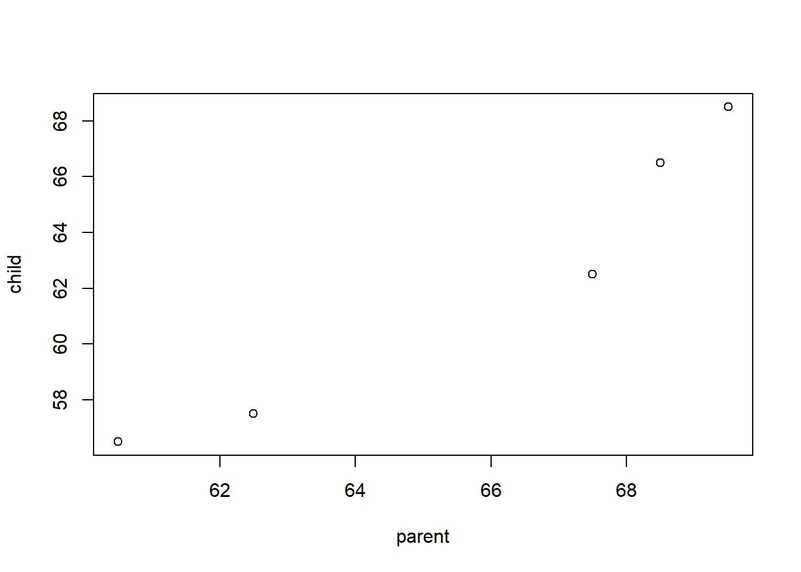

Chapter 10 Linear model estimation
10.1 A simple motivating example
Suppose you observe data related to the heights of 5 mothers and their adult daughters. The observed heights (measured in inches) are provided in Table 10.1.
| observation | mother’s height (in) | daughter’s height (in) |
|---|---|---|
| 1 | 67.5 | 62.5 |
| 2 | 60.5 | 56.5 |
| 3 | 69.5 | 68.5 |
| 4 | 68.5 | 66.5 |
| 5 | 62.5 | 57.5 |
The 5 pairs of observed data are denoted \[(x_1, Y_1), (x_2, Y_2), \ldots, (x_5, Y_5),\] with \((x_i, Y_i)\) denoting the data for observation \(i\). \(x_i\) denotes the mother’s height for observation \(i\) and \(Y_i\) denotes the daughter’s height for observation \(i\). In this data set, e.g., \(x_3 = 69.5\) and \(Y_5= 57.5\).
Figure 10.1 displays a scatter plot of height data provided in Table 10.1. The relationship between the points is approximately a straight line. Thus, we will model the typical (mean) relationship between the height of mothers and their adult daughters as a straight line.

Figure 10.1: Daughter’s versus mother’s height.
The \(x_1,x_2,\ldots,x_5\) are observed values of a random variable \(X\), while \(Y_1, Y_2, \ldots, Y_5\) are observed values of a random variable \(Y\). Thus, \(X\) denotes the height a mother and \(Y\) denotes the height of (one of) their adult daughter(s). We want to model variable \(Y\) using variable \(X\). The variable we are trying to model is known as the response variable. The variables we use to model the response are known as regressor variables. Response variables are also known as outcome, output, or dependent variables. Regressor variables are also known as explanatory, predictor, input, dependent, or feature variables.
A regression model describes the typical relationship between the response variable \(Y\) as a function of the regressor variable \(X\). More formally, the regression model for \(Y\) as a function of \(X\), denoted \(E(Y|X)\) is the expected value of \(Y\) conditional on the regressor \(X\). The regression model specifically refers to the expected relationship between the response and regressors.
A simple linear regression model assumes the regression model between \(Y\) and \(X\) is a straight line using the equation \[E(Y\mid X)=\beta_0 + \beta_1 X.\] \(\beta_0\) and \(\beta_1\) are the intercept and slope of our regression functions. In general, \(\beta_0\) and \(\beta_1\) are known as regression coefficients and are model parameters that we estimate from our data.
The estimated regression model is denoted by \[\hat{E}(Y|X)=\hat{\beta}_0 + \hat{\beta}_1 X,\] where \(\hat{\beta}_0\) and \(\hat{\beta}_1\) are values of \(\beta_0\) and \(\beta_1\) that we estimate from the data. A \(\hat{}\) above a term indicates it is an estimate. We will refer to \(\hat{m}(X)\) as the fitted model or estimated regression model.
How do we determine the “best fitting” model? Consider Figure 10.2, in which 3 potential “best fitting” models are drawn on the scatter plot of the height data. Which one is best?

Figure 10.2: Comparison of three potential fitted models to some observed data. The fitted models are shown in grey.
The rest of this chapter focuses on the typical goals of a regression analysis, estimating the parameters of a linear regression model, and the properties of these estimators under the standard assumptions.
10.2 Goals of regression
The basic goals of a regression model are to:
- Predict a future or unknown response values based on specified values of the regressors.
- What will the selling price of a home be based on its relevant characteristics?
- Identify relationships (associations) between regressor variables and the response.
- What is the general relationship between the selling price of a home and the number of bedrooms the home has?
A “true model” doesn’t exist for real data. Thus, finding the true model should not be the goal of a regression analysis. A regression analysis should attempt to find a model that adequately describes the relationship between the response and relevant predictor variables based on the goals of the analysis.
A distinction is sometimes made between regression models and classification models. In that case:
- Regression models attempt to predict a numeric response.
- Classification models attempt to predict the category level a response will have.
We will focus on predicting a numeric response.
10.3 Types of regression models
The are many “named” types of regression models. You may hear or see other use these terms when describing their model. Here is a brief overview of some common regression models.
| Name | Defining model characteristics |
|---|---|
| Simple | The model includes an intercept term and one regressor variable. |
| Multiple | The model includes more than one regressor variable. The model will typically include an intercept term, but this is not required. |
| Multivariate | More than one response variable is modeled simultaneously. |
| Linear | The model’s regression coefficients enter linearly. |
| Analysis of variance (ANOVA) | All regressors in the model are categorical. |
| Analysis of covariance (ANCOVA) | The model includes at least one numeric regressor and at least one categorical regressor. |
| Generalized linear model (GLM) | A type of “generalized” regression model in which the response distribution is a member of an exponential family. More simply, this type of regression model is popular when the response variable is non-Gaussian, e.g., if the response has a Bernoulli, Binomial, Poisson, log-Normal, or other distribution. |
10.4 Defining a linear model
A linear model is a regression model in which the regression coefficients enter the model linearly.
10.4.1 Basic construction and relationships
We begin by defining notation for the objects we will need and clarifying some of their important properties. We repeat some of the previous discussion for clarity.
- \(Y\) denotes the response variable.
- The response variable is treated as a random variable.
- We will observe realizations of this random variable for each observation in our data set.
- \(X\) denotes a single regressor variable. \(X_1\), \(X_2\), , \(X_{p-1}\) denote distinct regressor variables if we are performing multiple regression.
- The regressor variables are treated as non-random variables.
- The observed values of the regressor variables are treated as fixed, known values.
- \(\mathbb{X}=\{X_1,\ldots,X_{p-1}\}\) denotes the collection of all regressors under consideration, though this notation is really only needed in the context of multiple regression.
- \(\beta_0\), \(\beta_1\), , \(\beta_{p-1}\) denote regression coefficients.
- Regression coefficients are statistical parameters that we will estimate from our data.
- The regression coefficients are treated as fixed (non-random) but unknown values.
- Regression coefficients are not observable.
- \(\epsilon\) denotes model error.
- The error is treated as a random variable.
- The error is assumed to have mean 0 for all values of the regressors, i.e., \(E(\epsilon\mid\mathbb{X}) = 0\).
- The error is never observable (except in the context of a simulation study where the experimenter literally defines the true model).
- In this context, error doesn’t mean “mistake” or “malfunction.” \(\epsilon\) is simply the deviation of the response from its mean.
10.4.2 Standard definition of linear model
A linear model for \(Y\) is defined by the equation \[\begin{align} Y &= \beta_0 + \beta_1 X_1 + \beta_2 X_2 + \cdots + \beta_{p-1} X_{p-1} + \epsilon \\ &= E(Y \mid \mathbb{X}) + \epsilon \tag{10.1} \end{align}\]
We write the model using the form in Equation (10.1) to emphasize the fact the response value equals the expected response for that combination of regressor values plus some error. It should be clear from comparing Equation (10.1) with the previous line that \[E(Y \mid \mathbb{X}) = \beta_0 + \beta_1 X_1 + \beta_2 X_2 + \cdots + \beta_{p-1} X_{p-1},\] which we will prove later.
More generally, one can say that a regression model is linear if the mean function can be written as a linear combination of the regression coefficients and known values, i.e., \[\begin{equation} E(Y\mid X_1, X_2, \ldots, X_{p-1}) = \sum_{j=0}^{p-1} c_j \beta_j,\tag{10.2} \end{equation}\] where \(c_0, c_1, \ldots, c_{p-1}\) are known functions of the regressor variables, e.g., \(c_1 = X_1 X_2 X_3\), \(c_3 = X_2^2\), \(c_8 = \ln(X_1)/X_2^2\), etc. Thus, if \(g_0,\ldots,g_{p-1}\) are functions of \(\mathbb{X}\), then we can say that the regression model is linear if it can be written as \[E(Y\mid \mathbb{X}) = \sum_{j=0}^{p-1} g_j(\mathbb{X})\beta_j.\]
Some examples of linear regression models:
- \(E(Y|X) = \beta_0\).
- \(E(Y|X) = \beta_0 + +\beta_1 X + \beta_2 X^2\).
- \(E(Y|X_1, X_2) = \beta_0 + \beta_1 X_1 + \beta_2 X_2\).
- \(E(Y|X_1, X_2) = \beta_0 + \beta_1 X_1 + \beta_2 X_2 + \beta_3 X_1 * X_2\).
- \(E(Y|X_1, X_2) = \beta_0 + \beta_1 \ln(X_1) + \beta_2 X_2^{-1}\).
- \(E(\ln(Y)|X_1, X_2) = \beta_0 + \beta_1 X_1 + \beta_2 X_2\).
- \(E(Y^{-1}|X_1, X_2) = \beta_0 + \beta_1 X_1 + \beta_2 X_2\).
Some examples of non-linear regression models:
- \(E(Y|X) = \beta_0 + e^{\beta_1 X}\).
- \(E(Y|X) = \beta_0 + \beta_1 X/(\beta_2 + X)\).
The latter regression models are non-linear models because there is no way to express them using the expression in Equation (10.2).
There are many different methods of parameter estimation in statistics: method-of-moments, maximum likelihood, Bayesian, etc. The most common parameter estimation method for linear models is least squares method, which is perhaps comonly called Ordinary Least Squares (OLS) estimation. OLS estimation estimates the regression coefficients with the values that minimize the residuals sum of squares (RSS), which we will define shortly.
10.5 Estimation of the simple linear regression model
Recall that for a simple linear regression model \[Y = \beta_0 + \beta_1 X + \epsilon = E(Y|X) + \epsilon\] where \[E(Y|X) = \beta_0 + \beta_1 X.\] In a simple linear regression context, we have \(n\) observed responses \(Y_1,Y_2,\ldots,Y_n\) and \(n\) regressor values \(x_1,x_2,\ldots,x_n\).
Let \(\hat{\beta}_j\) denote the estimated value of \(\beta_j\) and \(\hat{E}(Y|X) = \hat{\beta}_0 + \hat{\beta}_1 X\) denote the estimated regression model.
The \(i\)th fitted value is defined as \[\hat{Y}_i = \hat{E}(Y|X = x_i) = \hat{\beta}_0 + \hat{\beta}_1 x_i.\] Thus, the \(i\)th fitted value is the estimated mean of \(Y\) when the regressor \(X=x_i\). More specifically, the \(i\)th fitted value is the estimated mean response for the combination of regressor values observed for the \(i\)th observation.
The \(i\)th residual is defined as \[\hat{\epsilon}_i = Y_i - \hat{Y}_i.\] The \(i\)th residual is the difference between the response and estimated mean response of observation \(i\).
The RSS of a regression model is the sum of its squared residuals.
The RSS for a simple linear regression model, as a function of the estimated regression coefficients, is \[\begin{align*} RSS(\hat{\beta}_0, \hat{\beta}_1) &= \sum_{i=1}^n \hat{\epsilon}_i^2 \\ &= \sum_{i=1}^n (Y_i - \hat{Y}_i)^2 \\ &= \sum_{i=1}^n (Y_i - \hat{E}(Y|X=x_i))^2 \\ &= \sum_{i=1}^n (Y_i - (\hat{\beta}_0 + \hat{\beta}_1 x_i))^2. \end{align*}\]
The fitted model is the estimated model that minimizes the RSS. In a simple linear regression context, the fitted model is known as the line of best fit.
In Figure 10.3, we attempt to visualize the response values, fitted values, residuals, and line of best fit in a simple linear regression context. Notice that:
- The fitted values are the value returned by the line of best fit when it is evaluated at the observed predictor values. Alternatively, the fitted value for each observation is the y-value obtained when intersecting the line of best fit with a vertical line drawn from each observed predictor value.
- The residual is the vertical distance between each response value and the fitted value.
- The RSS seeks to minimize the sum of the squared vertical distances between the response and fitted values.
Figure 10.3: Visualization of the response values, fitted values, residuals, and line of best fit.
10.5.1 Problematic numerical estimation
As we have attempted to emphasize through its notation, \(RSS(\hat{\beta}_0, \hat{\beta}_1)\) is a function of \(\hat{\beta}_0\) and \(\hat{\beta}_1\). OLS estimation for the simple linear regression model seeks to find the values of the estimated coefficients that minimize \(RSS(\hat{\beta}_0, \hat{\beta}_1)\). In the example below, we visualize this three-dimensional surface to see how difficult it would be to optimize the RSS numerically.
Wachsmuth, Wilkinson, and Dallal (2003) compiled child and parent height data from English familes tabulated by Pearson and Lee (1897) and Pearson and Lee (1903). The data are available in the PearsonLee data set in the HistData package (Friendly 2021). The PearsonLee data frame includes the variables:
child: child height (inches)parent: parent height (inches)
and other variables we will not consider here.
It is natural to wonder whether the height of a parent could explain the height of their child. We can consider a regression analysis that regresses child’s height (the response variable) on parent’s height (the regreoss variable).
Consider a plot of child’s height versus parent’s height.
data(PearsonLee, package = "HistData") # load data
library(ggplot2) # load ggplot2 package
# create ggplot object for repeated use
# we'll be using common aesthetics across multiple geometries
# so we put them in the ggplot function
# also improve the x, y labels
ggheight <- ggplot(data = PearsonLee,
mapping = aes(x = parent, y = child)) +
xlab("parent height (in)") + ylab("child height (in)")
ggheight + geom_point() # scatter plot of child vs parent height
We see a positive linear association between parent height and child height: as the height of the parent increases, the height of the child also tends to increase.
We seek to estimate the simple linear regression model
\[E(\mathtt{child} \mid \mathtt{parent}) = \beta_0 + \beta_1 \mathtt{parent}\]
with the values of \(\hat{\beta}_0\) and \(\hat{\beta}_1\) that minimize the associated RSS. We first load the height data, extract the response and regressor variables, and assign them the names y and x.
# load height data
data(PearsonLee, package = "HistData")
# extract response and regressor variables from data set
y <- PearsonLee$child
x <- PearsonLee$parentWe now create a function that computes the RSS as a function of \(\hat{\beta}_0\) and \(\hat{\beta}_1\) (called b0 and b1, respectively in the code below). The function takes the vector b = c(b0, b1), extracts b0 and b1 from this vector, computes the fitted values (yhat) for the provided b0 and b1, computes the corresponding residuals (ehat), and the returns the sum of the squared residuals, i.e., the RSS.
# function to compute the RSS
# b = c(b0, b1)
compute_rss <- function(b) {
b0 = b[1] # extract b0 from b
b1 = b[2] # extract b1 from b
yhat <- b0 + b1 * x # compute fitted values
ehat <- y - yhat # compute residuals
return(sum(ehat^2)) # return RSS
}Next, we specify sequences of b0 and b1 values at which to evaluate the RSS. We then use a double for loop to evaluate the RSS for each combination of b0 and b1 and store the results in rss_mat.
# sequences of candidate b0 and b1 values
b0_seq <- seq(40, 42, len = 15)
b1_seq <- seq(0.2, 0.6, len = 15)
# matrix to store rss values
rss_mat <- matrix(nrow = length(b0_seq), ncol = length(b1_seq))
# use double loop to compute RSS for all combinations of b0_seq and b1_seq
# seq_along(b0_seq) returns the vector 1:length(b0_seq), but is safer
for (i in seq_along(b0_seq)) {
for (j in seq_along(b1_seq)) {
rss_mat[i, j] <- compute_rss(c(b0_seq[i], b1_seq[j]))
}
}We can approximate the optimal values of b0 and b1 that minimize the RSS through the optim function. The optim function takes two main arguments:
par: a vector of starting values for the optimization algorithm. In our case, this will be the starting values forb0andb1.fn: a function ofparto minimize.
The optim function will return a list with several pieces of information (see ?stats::optim) for details. We want the par component of the returned list, which is the par vector that (approximately) minimizes fn.
# use the optim function to find the values of b0 and b1 that minimize the RSS
# par is the vector of initial values
# fn is the function to minimize
# $par extracts the values found by optim to minimize fn
optimal_b <- optim(par = c(41, 0.4), fn = compute_rss)$par
# print the optimal values of b
optimal_b## [1] 41.0655877 0.3842737The optim function tells us that \(\hat{\beta}_0=41.066\) and \(\hat{\beta}_1=0.384\) minimize the RSS. However, if we consider a surface and contour plot of the RSS surface along with the optimal value, we see that perhaps this result isn’t as precise as we would like.
The optim function tells us that \(\hat{\beta}_0=41.066\) and \(\hat{\beta}_1=0.384\) minimize the RSS. Consider a surface plot of the RSS function.
persp(x = b0_seq, y = b1_seq, z = rss_mat,
xlab = "b0", ylab = "b1", zlab = "RSS",
theta = -45, phi = 15)
Figure 10.4: Perspective plot of RSS as a function of b0 and b1.
There is a flat line in the surface along which different values of \(\hat{\beta}_0\) and \(\hat{\beta}_1\) will produce nearly identical RSS values. This is even easier to see using a contour plot.
# plot optimal value as an X on the contour plot
contour(x = b0_seq, y = b1_seq, z = rss_mat, xlab = "b0", ylab = "b1")
title("RSS contours of Pearson and Lee height data")
points(x = optimal_b[1], y = optimal_b[2], pch = 4)
Figure 10.5: A contour plot of RSS as a function of b0 and b1. The ‘X’ is the value of (b0, b1) that numerically minimizes the RSS.
par(mfrow = c(1, 1))A contour plot uses contour lines to describe the height of the \(z\) dimension of a 3-dimensional \((x, y, z)\) surface. Each line/contour indicates the height of the surface along that line. Note that in the graphic above, the contours are basically straight lines. There’s no easily identifiable combinations of b0 and b1 the produce the minimum RSS.
What is our takeaway from this example? It’s probably not ideal to numerically search for the values of \(\hat{\beta}_0\) and \(\hat{\beta}_1\) that minimize \(RSS(\hat{\beta}_0\), \(\hat{\beta}_1)\). Our numerical approximate of the optimal value may not be nearly as precise as desired. Instead, we should seek an exact solution using mathematics.
10.5.2 OLS estimators of the simple linear regression parameters
Define \(\bar{x}=\frac{1}{n}\sum_{i=1}^n x_i\) and \(\bar{Y} = \frac{1}{n}\sum_{i=1}^n Y_i\).
The OLS estimators of the regression coefficients for a simple linear regression coefficients are
\[\begin{align*} \hat{\beta}_1 &= \frac{\sum_{i=1}^n x_i Y_i - \frac{1}{n} \biggl(\sum_{i=1}^n x_i\biggr)\biggl(\sum_{i=1}^n Y_i\biggr)}{\sum_{i=1}^n x_i^2 - \frac{1}{n} \biggl(\sum_{i=1}^n x_i\biggr)^2} \\ &= \frac{\sum_{i=1}^n (x_i - \bar{x})(Y_i - \bar{Y})}{\sum_{i=1}^n (x_i - \bar{x})^2} \\ &= \frac{\sum_{i=1}^n (x_i - \bar{x})Y_i}{\sum_{i=1}^n (x_i - \bar{x})x_i} \end{align*}\] and \[\begin{equation} \hat{\beta}_0 = \bar{Y} - \hat{\beta}_1 \bar{x}. \end{equation}\]
Thought it’s already been said, we state once again that the OLS estimators of \(\beta_0\) and \(\beta_1\) shown above are the estimators that minimize the RSS.
The other parameter we’ve discussed is the error variance, \(\sigma^2\). The most common estimator of the error variance is \[\begin{equation} \hat{\sigma}^2 = \frac{RSS}{n-p}, \tag{10.3} \end{equation}\] where \(p\) is the number of regression coefficients. In general, \(n-p\) is the degrees of freedom of the RSS. In a simple linear regression context, the denominator of (10.3) is \(n-2\).
10.6 Penguins simple linear regression example
We will use the penguins data set in the palmerpenguins package (Horst, Hill, and Gorman 2020) to illustrate a very basic simple linear regression analysis.
The penguins data set provides data related to various penguin species measured in the Palmer Archipelago (Antarctica), originally provided by Gorman, Williams, and Fraser (2014). We start by loading the data into memory.
data(penguins, package = "palmerpenguins")The data set includes 344 observations of 8 variables. The variables are:
species: afactorindicating the penguin speciesisland: afactorindicating the island the penguin was observedbill_length_mm: anumericvariable indicating the bill length in millimetersbill_depth_mm: anumericvariable indicating the bill depth in millimetersflipper_length_mm: anintegervariable indicating the flipper length in millimetersbody_mass_g: anintegervariable indicating the body mass in gramssex: afactorindicating the penguin sex (female,male)year: an integer denoting the study year the penguin was observed (2007,2008, or2009)
We begin by creating a scatter plot of bill_length_mm versus body_mass_g (y-axis versus x-axis) in Figure 10.6. We see a clear positive association between body mass and bill length: as the body mass increases, the bill length tends to increase. The pattern is linear, i.e., roughly a straight line.
plot(bill_length_mm ~ body_mass_g, data = penguins,
ylab = "bill length (mm)", xlab = "body mass (g)",
main = "Penguin size measurements")
Figure 10.6: A scatter plot of penguin bill length (mm) versus body mass (g)
We first perform a single linear regression analysis manually using the equations previously provided by regressing bill_length_mm on body_mass_g.
Using the summary function on the penguins data frame, we see that both bill_length_mm and body_mass_g have NA values.
summary(penguins)## species island bill_length_mm bill_depth_mm
## Adelie :152 Biscoe :168 Min. :32.10 Min. :13.10
## Chinstrap: 68 Dream :124 1st Qu.:39.23 1st Qu.:15.60
## Gentoo :124 Torgersen: 52 Median :44.45 Median :17.30
## Mean :43.92 Mean :17.15
## 3rd Qu.:48.50 3rd Qu.:18.70
## Max. :59.60 Max. :21.50
## NA's :2 NA's :2
## flipper_length_mm body_mass_g sex year
## Min. :172.0 Min. :2700 female:165 Min. :2007
## 1st Qu.:190.0 1st Qu.:3550 male :168 1st Qu.:2007
## Median :197.0 Median :4050 NA's : 11 Median :2008
## Mean :200.9 Mean :4202 Mean :2008
## 3rd Qu.:213.0 3rd Qu.:4750 3rd Qu.:2009
## Max. :231.0 Max. :6300 Max. :2009
## NA's :2 NA's :2We want to remove the rows of penguins where either body_mass_g or bill_length_mm have NA values. We do that below using the na.omit function (selecting only the relevant variables) and assign the cleaned object the name penguins_clean.
# remove rows of penguins where bill_length_mm or body_mass_g have NA values
penguins_clean <- na.omit(penguins[,c("bill_length_mm", "body_mass_g")])We extract the bill_length_mm variable from the penguins data frame and assign it the name y since it will be the response variable. We extract the body_mass_g variable from the penguins data frame and assign it the name y since it will be the predictor variable. We also determine the number of observations and assign that value the name n.
# extract response and predictor from penguins_clean
y <- penguins_clean$bill_length_mm
x <- penguins_clean$body_mass_g
# determine number of observations
n <- length(y)We now compute \(\hat{\beta}_1\) and \(\hat{\beta}_0\). Note that placing () around the assignment operations will both perform the assign and print the results.
# compute OLS estimates of beta1 and beta0
(b1 <- (sum(x * y) - sum(x) * sum(y) / n)/(sum(x^2) - sum(x)^2/n))## [1] 0.004051417(b0 <- mean(y) - b1 * mean(x)) ## [1] 26.89887The estimated value of \(\beta_0\) is \(\hat{\beta}_0=26.90\) and the estimated value of \(\beta_1\) is \(\hat{\beta}_1=0.004\). The basic mathematical interpretation of our results is that:
- (\(\hat{\beta}_1\)): If a penguin has a body mass 1 gram larger than another penguin, we expect the larger penguins bill length to be 0.004 millimeters longer.
- (\(\hat{\beta}_0\)):A penguin with a body mass of 0 grams is expected to have a bill length of 26.9 millimeters.
The latter interpretation is clearly non-sensical and is caused by the fact that we are extrapolating far outside the observed body mass values. The relationship between body mass and bill length is different for penguin chicks versus adults.
We can use the abline function to overlay the fitted model on the observed data. Note that in simple linear regression, \(\hat{\beta}_1\) corresponds to the slope of the fitted line and \(\hat{\beta}_0\) will be the intercept.
plot(bill_length_mm ~ body_mass_g, data = penguins,
ylab = "bill length (mm)", xlab = "body mass (g)",
main = "Penguin size measurements")
# a is the intercept and b is the slope
abline(a = b0, b = b1)
The fit of the model to our observed data seems reasonable.
We can also compute the residuals, \(\hat{\epsilon}_1,\ldots,\hat{\epsilon}_n\), the fitted values \(\hat{y}_1,\ldots,\hat{y}_n\), and the associated RSS, \(RSS=\sum_{i=1}^n \hat{\epsilon}_i^2\).
yhat <- b0 + b1 * x # compute fitted values
ehat <- y - yhat # compute residuals
(rss <- sum(ehat^2)) # sum of the squared residuals## [1] 6564.494(sigmasqhat <- rss/(n-2)) # estimated error variance## [1] 19.3073410.7 Estimation of a linear regression model in general (using matrix notation)
We now consider the context where we want to estimate the parameters of a linear model with 1 or more regressors, i.e., when \[Y=\beta_0 + \beta_1 X_1 + \cdots + \beta_{p-1} X_{p-1} + \epsilon.\]
10.7.1 Using matrix notation to representing a linear model as a system of
To simplify estimation of the regression coefficients in a linear regresssion model, we must use matrix notation to describe the system of equation defining our linear model.
We define the following notation:
- \(\mathbf{y} = [Y_1, Y_2, \ldots, Y_n]^T\) denotes the column vector containing the \(n\) responses.
- \(\mathbf{X}\) denotes the matrix containing a column of 1s and the observed predictor values, specifically, \[\mathbf{X} = \begin{bmatrix} 1 & x_{1,1} & x_{1,2} & \cdots & x_{1,p-1} \\ 1 & x_{2,1} & x_{2,2} & \cdots & x_{2,p-1} \\ \vdots & \vdots & \vdots & \vdots & \vdots \\ 1 & x_{n,1} & x_{n,2} & \cdots & x_{n,p-1} \end{bmatrix}.\]
- \(\boldsymbol{\beta} = [\beta_0, \beta_1, \ldots, \beta_{p-1}]^T\) denotes the column vector containing the \(p\) regression coefficients.
- \(\boldsymbol{\epsilon} = [\epsilon_1, \epsilon_2, \ldots, \epsilon_n]^T\) denotes the column vector contained the \(n\) errors.
Then the system of equations defining the linear model in (??) can be written as \[\mathbf{y} = \mathbf{X}\mathbf{\beta} + \boldsymbol{\epsilon}.\] Thus, a linear model can be represented as a system of linear equations using matrices. A model that cannot be represented as a system of linear equations using matrices is not a linear model.
10.8 Summarizing the components of a linear model
We have already introduced a lot of objects. To aid in making sense of their notation, their purpose in the model, whether they can be observed, and whether they are modeled as a random variable (vector) or fixed, non-random values, we summarize things below.
We’ve already talked about observing the response variable and the predictor variables. So these objects are observable. However, we have no way to measure the regression coefficients or the error. These are not observable.
On the other hand, we treat the response variable as a random variable. Perhaps surprisingly, we treated the predictor variables as a fixed, non-random variables. The regression coefficients are treated as fixed, non-random but unknown values. This is standard for parameters in a statistical model. The errors are also treated as random variables. In fact, since both the predictor variables and the regression coefficients are non-random, the only way for the response to be a random variable based on Equation (??) is for the errors to be random.
We summarize this information in the table below for the objects previously discussed using the various notations introduced.
| Notation | Description | Observable | Random |
|---|---|---|---|
| \(Y\) | response variable | Yes | Yes |
| \(Y_i\) | response value for the \(i\)th observation | Yes | Yes |
| \(\mathbf{y}\) | the \(n\times 1\) column vector of response values | Yes | Yes |
| \(X\) | predictor variable | Yes | No |
| \(X_j\) | the \(j\)th predictor variable | Yes | No |
| \(x_{i,j}\) | the value of the \(j\)th predictor variable for the \(i\)th observation | Yes | No |
| \(\mathbf{X}\) | the \(n\times p\) matrix of predictor values | Yes | No |
| \(\beta_j\) | the regression coefficient associated with the \(j\)th predictor variable | No | No |
| \(\boldsymbol{\beta}\) | the \(p\times 1\) column vector of regression coefficients | No | No |
| \(\epsilon\) | the error | No | Yes |
| \(\epsilon_i\) | the error associated with observation \(i\) | No | Yes |